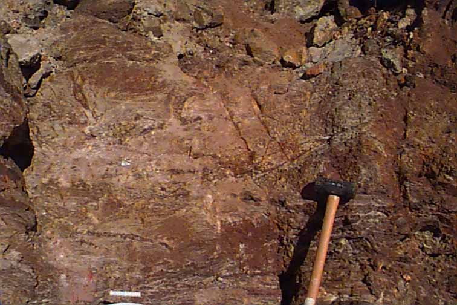
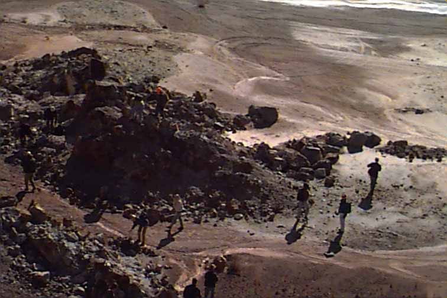
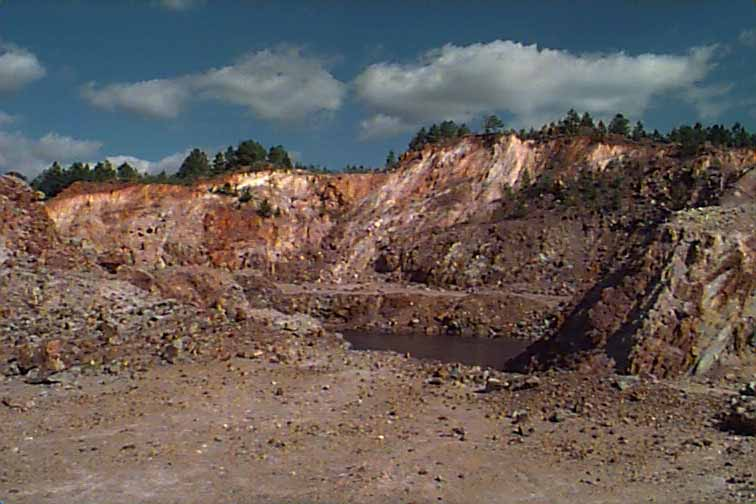
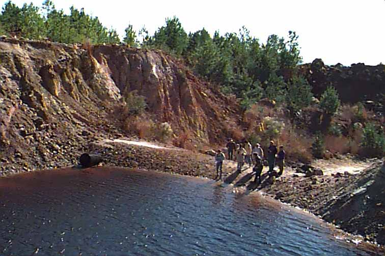

<center>
<a href="gravesfractures.jpeg" >
</a><BR>
graves fractures
<BR>
</center>

<center>
<a href="gravessoils.jpeg" >
</a><BR>
graves soils
<BR>
</center> 
<center>
<a href="gravespitbootom.jpeg" >
</a><BR>
grave pit bottom
<BR>
</center> 
<center>
<a href="gravespitcolors.jpeg" >
</a><BR>
graves pit colors
<BR>
</center> 
<center>
<a href="gravespitsouth.jpeg" >
</a><BR>
graves pit view south
<BR>
</center> 
<center>
<a href="gravespyrite.jpeg" >
</a><BR>
graves pyrite vien
<BR>
</center>
 <center>
<a href="gravesredpond.jpeg" >
</a><BR>
graves red pond
<BR>
</center> 
<center>
<a href="gravesredpond2.jpeg" >
</a><BR>

<BR>
</center> 
<center>
<a href="graveswatersample.jpeg" >
</a><BR>
graves water sampling
<BR>
</center>  
